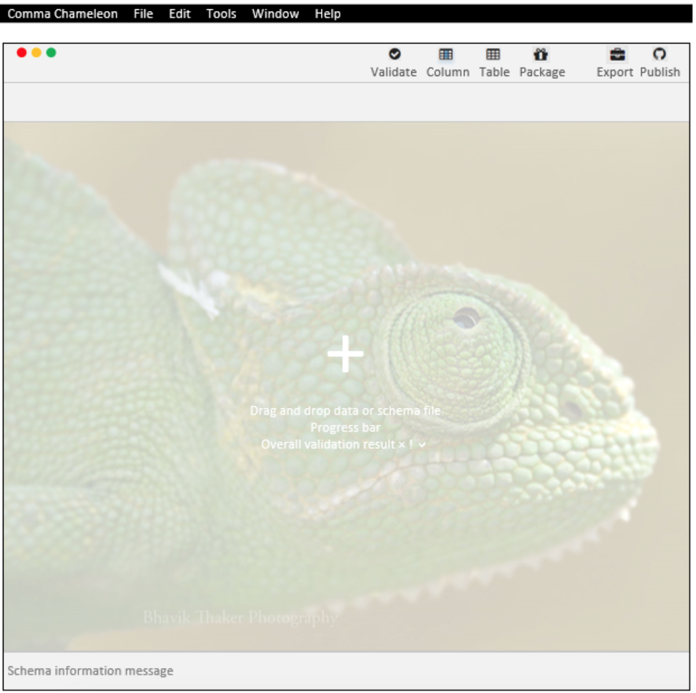

What is Data Curator?
Data Curator is a desktop CSV editor to describe, validate and share usable open data.
With Data Curator you can:
- create, open and edit tabular data
- describe the data and its validation rules
- validate the data
- save and export the data, its description and validation rules
Learn the key concepts behind Data Curator or read the guides to common tasks.
Layout
Add overview of user interface
Create, open and edit data
Describe the data
- Describe a data column and its validation rules
- Guess column properties
- Describe a table
- Describe the provenance of the data
- Describe the data package